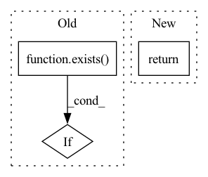

Pattern ID :26270
Before Change
q, k, v = self.to_qkv(feats).chunk(3, dim = -1)
q, k, v = map(lambda t: rearrange(t, "b n (h d) -> b h n d", h = h), (q, k, v))
if exists( mask) :
mask = rearrange(mask, "b n -> b () n ()")
k.masked_fill_(~mask, -torch.finfo(k.dtype).max)
After Change
def forward(self, x, queries, mask = None):
induced = self.attn1(queries, x, mask = mask)
out = self.attn2(x, induced)
return out, 0
class EquivariantAttention(nn.Module):
def __init__(In pattern: SUPERPATTERN
Frequency: 3
Non-data size: 3
Instances Fragment ID: 79038014
Project Name: lucidrains/en-transformer
Commit Name: 6bd1817d780502d24a2515e850c9cd1600f24642
Time: 2021-06-04
Author: lucidrains@gmail.com
File Name: en_transformer/en_transformer.py
M Class Name: GlobalLinearAttention
N Class Name: GlobalLinearAttention
M Method Name: forward(4)
N Method Name: forward(4)
M Parent Class: nn.Module
N Parent Class: nn.Module
M File Name: en_transformer/en_transformer.py
N File Name: en_transformer/en_transformer.py
M Start Line: 132
M End Line: 151
N Start Line: 160
N End Line: 162
Before Change
stats = {f"{tracker_context}-{loss_type}": avg_loss}
trainer.print(stats)
if exists( tracker) :
tracker.log(stats, step=trainer.step.item() + 1)
After Change
loss_type=loss_type,
)
return loss
// training script Fragment ID: 79038012
Project Name: lucidrains/dalle2-pytorch
Commit Name: f9423d308b6f36e51152c2c45045ff4ebb308287
Time: 2022-07-20
Author: 51308183+nousr@users.noreply.github.com
File Name: train_diffusion_prior.py
M Class Name: AnonimousClass
N Class Name: AnonimousClass
M Method Name: eval_model(10)
N Method Name: eval_model(7)
M Parent Class:
N Parent Class:
M File Name: train_diffusion_prior.py
N File Name: train_diffusion_prior.py
M Start Line: 69
M End Line: 111
N Start Line: 367
N End Line: 428
Before Change
def forward(self, *dimensions):
device = self.device
if not exists( self.rel_pos) or not self.cache_rel_pos:
positions = [torch.arange(d, device = device) for d in dimensions]
grid = torch.stack(torch.meshgrid(*positions, indexing = "ij"))
grid = rearrange(grid, "c ... -> (...) c")After Change
// now select the bias for each unique relative position combination
bias = bias[rel_dist_indices]
return rearrange(bias, "i j h -> h i j")
// helper classes
Fragment ID: 79038011
Project Name: lucidrains/make-a-video-pytorch
Commit Name: b6e0a17c5488b923d884272f7e46170352b0f0d5
Time: 2023-03-18
Author: lucidrains@gmail.com
File Name: make_a_video_pytorch/make_a_video.py
M Class Name: ContinuousPositionBias
N Class Name: ContinuousPositionBias
M Method Name: forward(1)
N Method Name: forward(1)
M Parent Class: nn.Module
N Parent Class: nn.Module
M File Name: make_a_video_pytorch/make_a_video.py
N File Name: make_a_video_pytorch/make_a_video.py
M Start Line: 110
M End Line: 126
N Start Line: 105
N End Line: 142